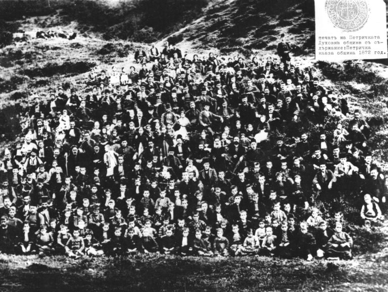

През вековете Кирил и Методий се превръщат в символ на руската култура и обществени стремежи. Те стават знаме на славянското възраждане и национална еманципация в Чехия и други славянски страни. Под влияние на българския култ те са възприети като светци от православната църква и извън славянския свят, включително в съвременна Гърция. В края на ХХ в. папа Йоан Павел II обявява двамата братя за „покровители на Европа“. Десетки народи, предимно в руското културно-политическо пространство през ХХ в. възприемат кирилица като писменост на своите национални езици. Сега 11/24 май се отбелязва в много държави Русия, Украйна, Беларус, Северна Македония, Сърбия, Черна гора, Чехия, Словакия и др.
